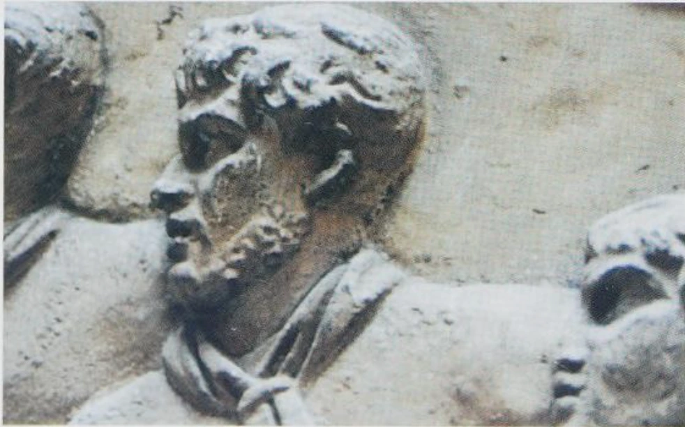
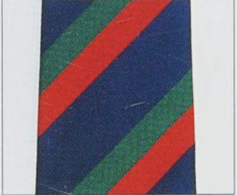
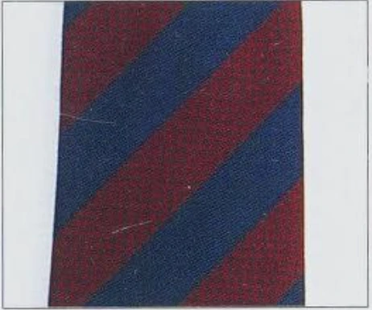
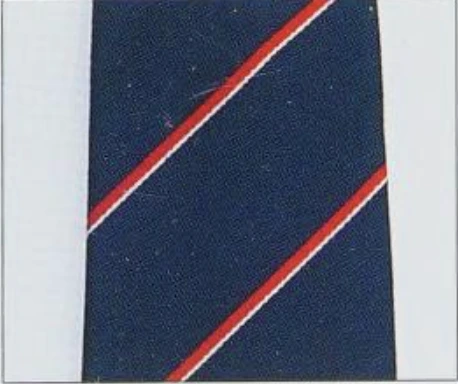
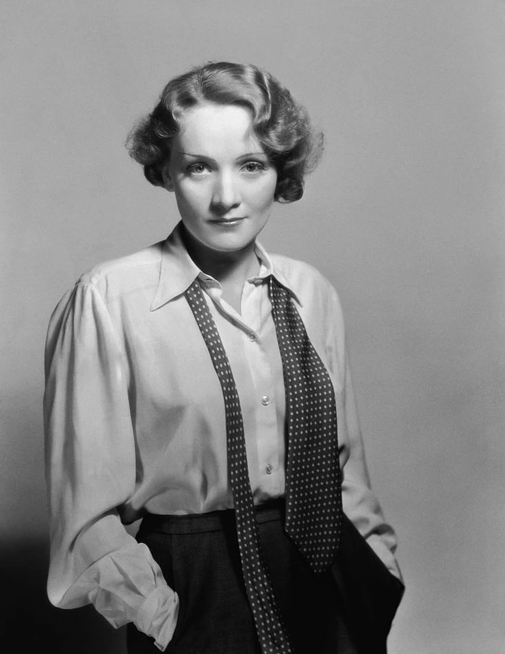
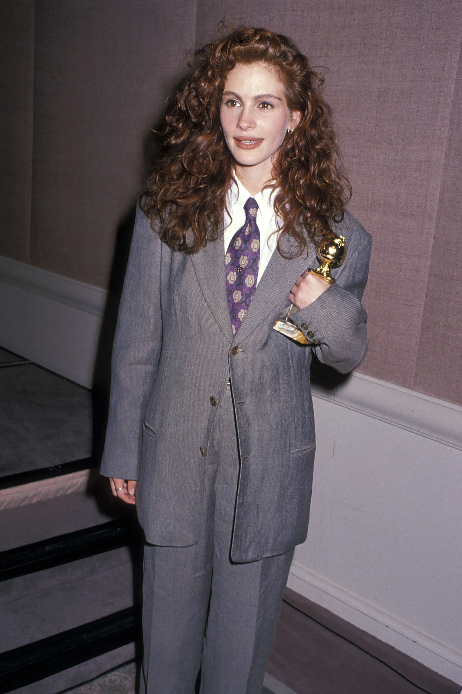

I believe that conscious self-confidence is essential — even required — for women who wear ties. A woman who can wear one gracefully while simultaneously sending a clear, defining message.
The origins of the tie are mentioned in
The Column of Traian
   
am fascinated by how an accessory that once belonged to the military has evolved into a symbol of elegance. Today, among politicians and the countless offices of multinational corporations, a tie represents power and professionalism. Yet I cannot help but think that we should not be fooled by a perfectly tied knot. The highly publicized case of the meeting between Donald Trump and Vladimir Zelensky in the Oval Office supports the perfect idea. The lack of respect and the absence of true refinement were all too evident, especially paired with the red, overly long tie and the expensive suit. In some cases, a tie can transform from a symbol of armor into a comical — even grotesque — mask…
On the other hand, for women in the 20th century, the tie was
associated with a strong sense of rebellion and emancipation.
Marlene Dietrich
 
The tie in my wardrobe is, in fact, borrowed from my father, a former banker, without any thought of returning it. In shades of azure and dark blue with gray stripes, wider than I imagined I would like, it is a masculine accessory that challenges me to be creative. Today, reinterpretation is key to adding flair to an outfit. Whether you wear it around your waist like a belt, at the base of the neck over a crisp white shirt, tied in one of the 48 famous knots, or left casually untied, you are sure to stand out. The multitude of patterns, fabrics, and original prints makes it possible to be truly unique — if you’re willing to experiment.
Beyond the freedom of expression that a tie offers as an accessory, my father’s tie carries a nostalgic undertone. It still smells faintly of coffee, as if I can see him wearing it and swaying in the distance on an evening after a long day of work. So much said about heritage — a quiet witness to the passage of time.
-AE